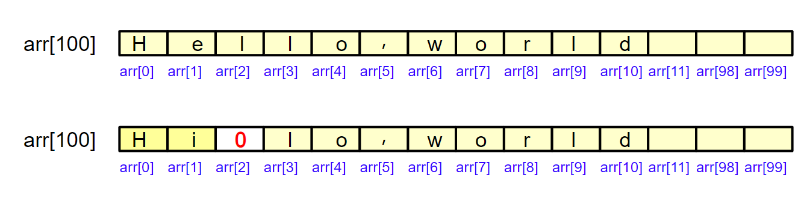
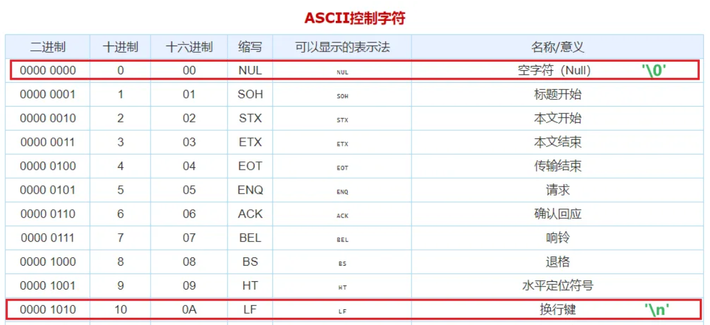
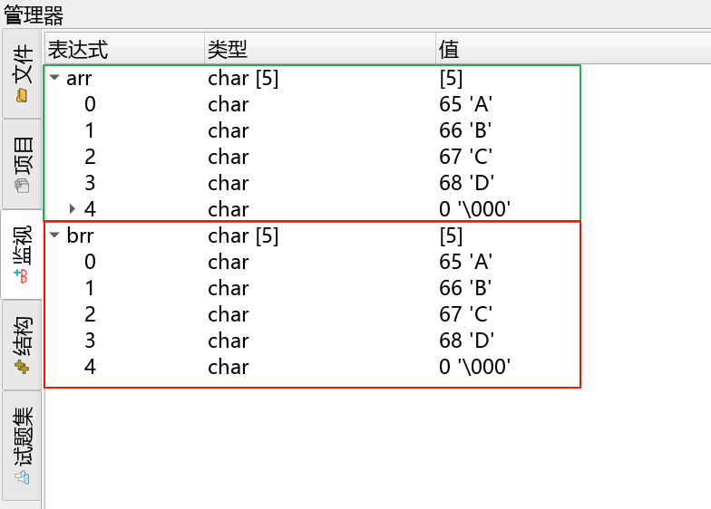
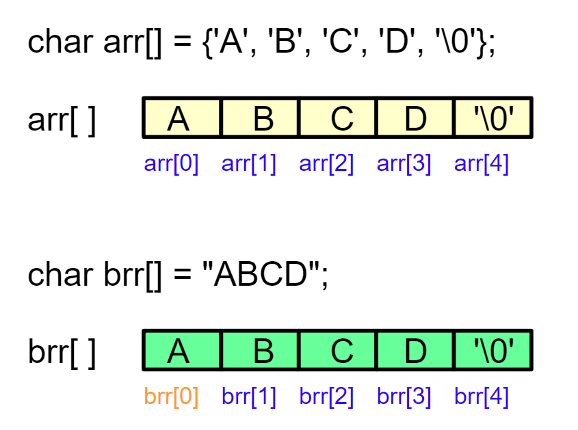

<!DOCTYPE lake>
<h1 data-lake-id="rjavn" id="rjavn"><span data-lake-id="u68aca790" id="u68aca790">1&gt; 字符数组</span></h1><p data-lake-id="u415b526f" id="u415b526f"><span data-lake-id="u4947581f" id="u4947581f">要求将</span><code data-lake-id="ufbd9f001" id="ufbd9f001"><span data-lake-id="u8f47813a" id="u8f47813a" style="color: #DF2A3F">Hi</span></code><span data-lake-id="u801fa7ef" id="u801fa7ef">存入数组， 并输出</span></p><span class="yuque-card-unsupported">[codeblock]</span><p data-lake-id="ucebf75a8" id="ucebf75a8"><span data-lake-id="ue0464c19" id="ue0464c19">需求变更将</span><code data-lake-id="u8905f76b" id="u8905f76b"><span data-lake-id="u0f9aba64" id="u0f9aba64" style="color: #DF2A3F">Hello</span></code><span data-lake-id="u748f29ca" id="u748f29ca">存入数组， 并输出</span></p><span class="yuque-card-unsupported">[codeblock]</span><p data-lake-id="ue07fe25a" id="ue07fe25a"><span data-lake-id="u60499439" id="u60499439">❓</span><span data-lake-id="u10411947" id="u10411947">问题：</span></p><p data-lake-id="u59093602" id="u59093602"><span data-lake-id="u8994ddfc" id="u8994ddfc">需求突变，又要存入</span><code data-lake-id="u13b62f1d" id="u13b62f1d"><span data-lake-id="ud05db8ed" id="ud05db8ed" style="color: #DF2A3F">Hello, world</span></code><span data-lake-id="u94a96337" id="u94a96337">呢？智慧的你想到了</span></p><span class="yuque-card-unsupported">[codeblock]</span><p data-lake-id="ucaf1199f" id="ucaf1199f"><br/></p><p data-lake-id="ue2bb62f0" id="ue2bb62f0"><span data-lake-id="u2c1abd4a" id="u2c1abd4a">OK，现在又想将</span><code data-lake-id="ub697a483" id="ub697a483"><span data-lake-id="u39d50268" id="u39d50268" style="color: #DF2A3F">Hi</span></code><span data-lake-id="u3d7ebe4c" id="u3d7ebe4c">存入数组， 并输出</span></p><span class="yuque-card-unsupported">[codeblock]</span><p data-lake-id="uc4789316" id="uc4789316"><span data-lake-id="u7d20b38a" id="u7d20b38a">😯</span><span data-lake-id="u9c361e9d" id="u9c361e9d">呦呵出错了，打印结果为</span><code data-lake-id="u24c4a070" id="u24c4a070"><span data-lake-id="u9ae1b24f" id="u9ae1b24f">H</span><strong><span class="lake-fontsize-14" data-lake-id="u0577e09e" id="u0577e09e" style="color: #DF2A3F">i</span></strong><span data-lake-id="u92d89c20" id="u92d89c20">llo,world</span></code><span data-lake-id="uadeed974" id="uadeed974">不是我们要的</span><code data-lake-id="u72ce1c84" id="u72ce1c84"><span data-lake-id="u65722a1d" id="u65722a1d">Hi</span></code><span data-lake-id="u178d5061" id="u178d5061">， 原来是 </span><code data-lake-id="u7ce63e6a" id="u7ce63e6a"><span data-lake-id="uc4beb6dd" id="uc4beb6dd">i &lt; </span><span data-lake-id="u6e00ade4" id="u6e00ade4" style="color: #DF2A3F">11</span></code><span data-lake-id="ub836d58b" id="ub836d58b"> 判读条件没改；</span></p><p data-lake-id="udb956980" id="udb956980"><span data-lake-id="u9eed3017" id="u9eed3017">够累的，每次都要修改判断条件，有没有好办法呢？</span></p><hr/><h1 data-lake-id="bxzEr" id="bxzEr"><span data-lake-id="uc16bfc4a" id="uc16bfc4a">2&gt; 终止符</span></h1><p data-lake-id="u2f3d7b50" id="u2f3d7b50"><span data-lake-id="u5d185864" id="u5d185864">功能需求：解决每次都要修改判断条件的问题</span></p><h2 data-lake-id="hQimH" id="hQimH"><span data-lake-id="u6f06b75f" id="u6f06b75f">2.1&gt; 方案1 - 记录长度</span></h2><span class="yuque-card-unsupported">[codeblock]</span><p data-lake-id="u6082fd67" id="u6082fd67"><span data-lake-id="ua989935e" id="ua989935e">🐪</span><span data-lake-id="u3ca76a9d" id="u3ca76a9d">通过增加</span><code data-lake-id="u9cc2a2c6" id="u9cc2a2c6"><span data-lake-id="uc60cfb25" id="uc60cfb25" style="color: #DF2A3F">length</span></code><span data-lake-id="u398b74e5" id="u398b74e5">变量，记录元素个数，解决了这个问题， </span></p><p data-lake-id="u590e4fa0" id="u590e4fa0"><span data-lake-id="u53aace3d" id="u53aace3d">但是，每个数组都要额外维护长度变量， 还是不够完美！</span></p><hr/><h2 data-lake-id="wNkZf" id="wNkZf"><span data-lake-id="u26e0b9bb" id="u26e0b9bb">2.2&gt; 方案2 - 终止符</span></h2><span class="yuque-card-unsupported">[codeblock]</span><p data-lake-id="ub47114d9" id="ub47114d9"></p><p data-lake-id="u50a10d08" id="u50a10d08"><span data-lake-id="u7bf5a2d2" id="u7bf5a2d2">😯</span><span data-lake-id="u34b672d0" id="u34b672d0">呦呵, 天才啊！</span></p><p data-lake-id="ucb49ca07" id="ucb49ca07"><span data-lake-id="u1a66b99d" id="u1a66b99d">不用增加变量，只需要每次写完加个标志位</span><code data-lake-id="ud6ad2fe2" id="ud6ad2fe2"><span class="lake-fontsize-14" data-lake-id="ua72c47a3" id="ua72c47a3" style="color: #C75C00">0</span></code><span data-lake-id="u472e9cbe" id="u472e9cbe">就可以了；</span></p><p data-lake-id="u04136bf5" id="u04136bf5"><span data-lake-id="ue4e287d8" id="ue4e287d8">写个测试程序验证下</span></p><span class="yuque-card-unsupported">[codeblock]</span><p data-lake-id="u45e3d9bb" id="u45e3d9bb"><span data-lake-id="u166f19cb" id="u166f19cb">完美解决，输出的问题！</span></p><h2 data-lake-id="dfhzL" id="dfhzL"><span data-lake-id="u30834ca1" id="u30834ca1">2.3&gt; '\0' 终止符</span></h2><p data-lake-id="uf2c0d880" id="uf2c0d880"><span data-lake-id="ud127c41a" id="ud127c41a">查看ASCII码表，十进制的10，可以用转义字符'\n' 表示；</span></p><p data-lake-id="ufb2b32c5" id="ufb2b32c5"><span data-lake-id="ub742f04a" id="ub742f04a">十进制的0，也可用'\0'表示</span></p><p data-lake-id="u6b6a3fe2" id="u6b6a3fe2"></p><p data-lake-id="u0fd07db9" id="u0fd07db9"><span data-lake-id="u6c01c607" id="u6c01c607">改写程序：</span></p><span class="yuque-card-unsupported">[codeblock]</span><p data-lake-id="u94b9f24c" id="u94b9f24c"><span data-lake-id="u9e4cad3a" id="u9e4cad3a">❓</span><span data-lake-id="u426cad27" id="u426cad27">还有个问题：</span></p><p data-lake-id="uda1abb1c" id="uda1abb1c"><span data-lake-id="u5cd58357" id="u5cd58357">每次都需要'A', 'm', 'a',,, 一个一个字母输入太累，有没有解决办法 ?</span></p><hr/><h1 data-lake-id="idTdw" id="idTdw"><span data-lake-id="uecc4b2fd" id="uecc4b2fd">3&gt; 字符串</span></h1><h2 data-lake-id="nptc5" id="nptc5"><span data-lake-id="u2bc20695" id="u2bc20695">3.1&gt; 语法糖 “...”</span></h2><p data-lake-id="u3dbc1e40" id="u3dbc1e40"></p><span class="yuque-card-unsupported">[codeblock]</span><p data-lake-id="ue6815249" id="ue6815249"><span data-lake-id="udaaa87e1" id="udaaa87e1">内存查看：</span></p><p data-lake-id="u49d518c4" id="u49d518c4"></p><p data-lake-id="uc79278bf" id="uc79278bf"></p><p data-lake-id="u5488c2cc" id="u5488c2cc"><br/></p><p data-lake-id="ue06709ce" id="ue06709ce"><span data-lake-id="u7d9f81f5" id="u7d9f81f5">🚀</span><span class="lake-fontsize-14" data-lake-id="u466caf97" id="u466caf97">编译器自动补</span><strong><span class="lake-fontsize-14" data-lake-id="u0b6c4482" id="u0b6c4482" style="color: #DF2A3F">'\0'</span></strong></p><p data-lake-id="u2945dc65" id="u2945dc65"><span data-lake-id="uf5a4cd5f" id="uf5a4cd5f">✅</span><span data-lake-id="ua12ac479" id="ua12ac479">这种双引号 </span><code data-lake-id="uaac08297" id="uaac08297"><span data-lake-id="u7b59fb55" id="u7b59fb55">"ABCD"</span></code><span data-lake-id="u43d89e74" id="u43d89e74">字符串 等价于</span><code data-lake-id="u87a7fa79" id="u87a7fa79"><span data-lake-id="u39c83890" id="u39c83890"> {'A', 'B', 'C', 'D', '\0'}; </span></code></p><p data-lake-id="u86c1a17e" id="u86c1a17e"><span data-lake-id="u35566e34" id="u35566e34">✅</span><span data-lake-id="u667f9554" id="u667f9554">字符串是用双引号括起的字符序列（如"Hello"），本质是以'\0'结尾的字符数组;</span></p><p data-lake-id="u547644bd" id="u547644bd"><span data-lake-id="u3860eede" id="u3860eede">✅</span><span data-lake-id="u46f3324f" id="u46f3324f">c语言中没有字符串型变量，所以用字符数组存储；</span></p><hr/><h2 data-lake-id="vhZlr" id="vhZlr"><span data-lake-id="ued5e3e63" id="ued5e3e63">3.2&gt; 字符串输出</span></h2><span class="yuque-card-unsupported">[codeblock]</span><p data-lake-id="u5b499f52" id="u5b499f52"><span data-lake-id="u69d3a412" id="u69d3a412">使用</span><code data-lake-id="u3c331c9a" id="u3c331c9a"><span data-lake-id="uf2390535" id="uf2390535">printf( )</span></code><span data-lake-id="u7637f738" id="u7637f738">的</span><code data-lake-id="u26835af0" id="u26835af0"><span class="lake-fontsize-12" data-lake-id="u646a066b" id="u646a066b" style="color: #5C8D07">%s</span></code><span data-lake-id="uf189e5f2" id="uf189e5f2">格式符：</span><span data-lake-id="uc58f5b93" id="uc58f5b93" style="color: #DF2A3F"> 自动</span><span data-lake-id="u2db6738f" id="u2db6738f">遍历字符直到遇到</span><code data-lake-id="u1b607c04" id="u1b607c04"><span data-lake-id="uc9ac85b6" id="uc9ac85b6" style="color: #DF2A3F">'\0'</span></code><span data-lake-id="ua0c0dd39" id="ua0c0dd39" style="color: #DF2A3F">；</span></p><hr/><h1 data-lake-id="YTf1z" id="YTf1z"><span data-lake-id="ub80a79e6" id="ub80a79e6">🐻</span><span data-lake-id="u2c351b22" id="u2c351b22">实践练习：</span></h1><span class="yuque-card-unsupported">[codeblock]</span>